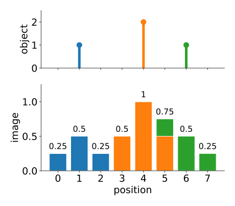
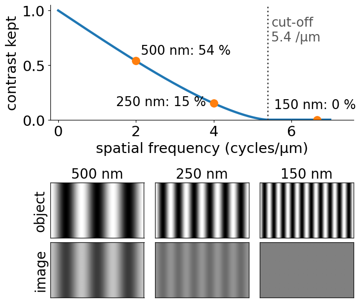
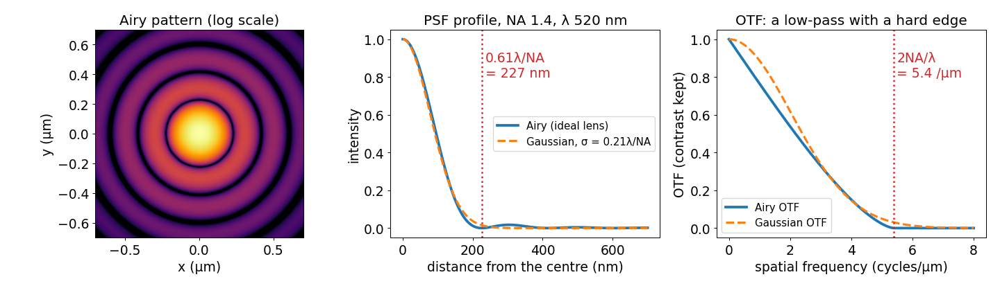
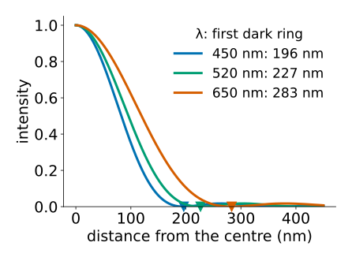
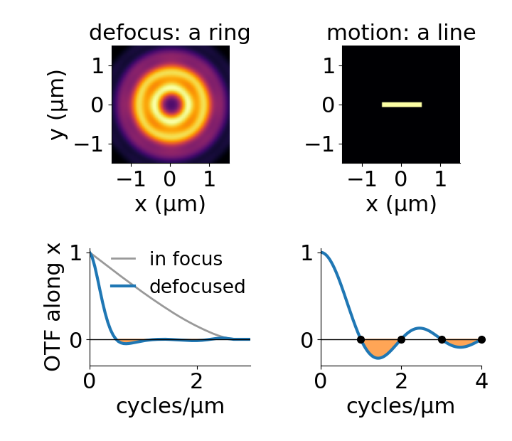

A micrograph treated as the true object (40 nm pixels), through an ideal lens with NA 0.8, sampled with 160 nm pixels, about 20 photons per pixel, and 8 grey levels.
Optics blur: every point becomes a small blob.
Sampling: the pixel grid records one number per pixel.
Noise: photons arrive at random, the camera adds read noise.
Quantisation: a finite number of grey levels.
This chain is the forward model: what the instrument does to the truth. Analysis that wants to measure the object has to know it.
Recall: the last two steps
From the bit depth and noise day:
Noise (the camera noise unit): photon counts are Poisson, \text{SNR} = \sqrt{N} for N photons; the camera adds read noise and an offset.
Quantisation (the quantisation unit): a finite bit depth rounds every value to a grey level.
Today is about the first steps: the optics, and (next unit) the pixels. The noise comes back at the end of the day, where it decides what can be undone.
The image of a point
A lens cannot focus light to a point. The image of a point is a small blob: the point spread function, h.
Fluorescence is incoherent: the images of different points add up in intensity.
So the image is a sum of shifted copies of the PSF, each weighted by the brightness of its point: a convolution, image = object ∗ PSF.
This is the convolution of the filtering unit, with a kernel made by physics. A blur kernel is a PSF.
By hand. Three point sources, brightness 1, 2, 1 at positions 1, 4 and 6; PSF (1, 2, 1)/4. Each point puts a scaled copy of the PSF around itself (one colour each); the image is their sum. The total stays 4: blur moves light around, it does not remove it.

Top: the three point sources. Bottom: the image, built from one copy of the PSF per point (stacked colours), with the pixel values on top: 0.25, 0.5, 0.25, 0.5, 1, 0.75, 0.5, 0.25.
H is the optical transfer function (OTF); |H| is the modulation transfer function (MTF).
A PSF normalised to \int h = 1 has H(\mathbf 0) = \int h(\mathbf x)\,e^{0}\,d\mathbf x = 1: the mean brightness passes unchanged.
A PSF that is symmetric, h(-\mathbf x) = h(\mathbf x), has a real OTF; it can still be negative.
A grating 1 + \cos(2\pi \mathbf k\cdot\mathbf x) is imaged as 1 + H(\mathbf k)\cos(2\pi\mathbf k\cdot\mathbf x) (symmetric PSF): its contrast is multiplied by H(\mathbf k).
Recall: blur in frequency space
From the frequency unit: convolution = multiplication of spectra. So the optics act frequency by frequency.
The PSF’s Fourier transform, the OTF, says how much of each frequency (each stripe pattern) survives.
Its magnitude, the MTF, is the contrast kept: 1 at frequency 0 (the mean brightness), falling towards 0 for fine detail.
Example (numbers on the next slides): a grating with period 500 nm keeps 54 % of its contrast through an NA 1.4 objective, one with period 250 nm 15 %, one with period 150 nm nothing.

Top: the MTF of an ideal NA 1.4 objective at 520 nm, with the three gratings marked. Bottom: each grating as object and as image; the 150 nm grating comes out flat grey.
Diffraction: a hard edge in frequency
The objective collects only a cone of light with half-angle \alpha. Its numerical aperture is \mathrm{NA} = n\sin\alpha (n: refractive index, 1.518 for immersion oil).

Left: the PSF of a perfect lens (Airy pattern), log scale. Middle: its profile, with the Gaussian approximation. Right: the OTF, zero beyond 2NA/λ.
The OTF is exactly zero beyond the cut-off frequency2\mathrm{NA}/\lambda: the microscope is a low-pass filter with a hard edge.
Detail finer than the cut-off is not just blurred: it is gone from the image.
The PSF of a perfect lens is the Airy pattern: a central disc, radius 0.61\lambda/\mathrm{NA}, and faint rings.
The math: the pupil and the Airy pattern
The lens passes the plane waves inside the cone: in frequency space a disc of radius \mathrm{NA}/\lambda, the pupilP.
Coherent (amplitude) PSF: a = \mathcal F^{-1} P. Incoherent (intensity) PSF: h = |a|^2 = |\mathcal F^{-1}P|^2.
Then H = \mathcal F h = P \star P, the autocorrelation of the pupil: the overlap of the disc with a copy shifted by \mathbf k. It is zero once the shift exceeds the pupil diameter: cut-off |\mathbf k| = 2\mathrm{NA}/\lambda.
Overlap of two discs, s = |\mathbf k|/k_c: \displaystyle H(s) = \tfrac{2}{\pi}\big(\arccos s - s\sqrt{1 - s^2}\big) for s \le 1, else 0.
Circular pupil: h(r) \propto \left[\dfrac{2J_1(v)}{v}\right]^2, v = \dfrac{2\pi\,\mathrm{NA}\,r}{\lambda} (J_1: Bessel function). The first zero of J_1 is at v = 3.832, so the dark ring is at r = \dfrac{3.832}{2\pi}\dfrac{\lambda}{\mathrm{NA}} = 0.61\dfrac{\lambda}{\mathrm{NA}}.
Width: \text{FWHM} = 0.51\lambda/\mathrm{NA}; the Gaussian with \sigma = 0.21\lambda/\mathrm{NA} matches the central disc.
Numbers for a microscope
Green light, \lambda = 520 nm:
objective
Rayleigh 0.61\lambda/\mathrm{NA}
Abbe \lambda/2\mathrm{NA}
cut-off 2\mathrm{NA}/\lambda
oil, NA 1.4
227 nm
186 nm
5.4 cycles/µm
dry, NA 0.3
1.06 µm
867 nm
1.15 cycles/µm
Rayleigh: two points are “resolved” when the peak of one sits on the first dark ring of the other (next unit). Abbe: the finest grating period that passes, 1/(2\mathrm{NA}/\lambda).
Colour matters: blue (450 nm) vs red (650 nm) light at NA 1.4: Rayleigh 196 nm vs 283 nm, 44 % apart.
Halving \lambda or doubling NA has the same effect; in practice NA stops near 1.4–1.5 and \lambda is set by the dye.

Profiles of the Airy pattern at NA 1.4 for blue, green and red light; the triangles mark the first dark ring (Rayleigh distance).
Try it: PSF and OTF
Other blurs, other PSFs
Defocus: the PSF widens; far out of focus it becomes a ring. Its OTF goes negative at some frequencies: stripes there appear with reversed contrast (bright where the object is dark).
Motion during the exposure (length L): the PSF is a short line. Its OTF along the motion is a sinc with exact zeros at 1/L, 2/L, \dots: those stripe patterns vanish completely. L = 1 µm: zeros at 1, 2, 3 cycles/µm.
Gaussian with \sigma = 0.21\lambda/\mathrm{NA}: the convenient approximation of the in-focus PSF (no rings, no hard cut-off). The scale of the optics, \sigma = 78 nm at NA 1.4: spot detectors (edges, blobs and ridges day; point detection) should be tuned to it.
Also blurs: scattering in tissue, the pixel’s own area, atmospheric turbulence for telescopes.

Top: the PSF of a lens 2 µm out of focus (NA 0.7 in air, 520 nm) and of 1 µm motion along x. Bottom: their OTFs along x, negative parts shaded: defocus has negative lobes, motion has exact zeros at 1, 2, 3 cycles/µm.
The math: defocus and motion
Defocus by z: each plane wave in the pupil travels a slightly different optical path. A phase \phi(\rho) = 2\pi z\big(\sqrt{(n/\lambda)^2 - \rho^2} - n/\lambda\big) is added at pupil frequency \rho; close to the axis this is \approx -\pi\lambda z\rho^2/n, a quadratic phase.